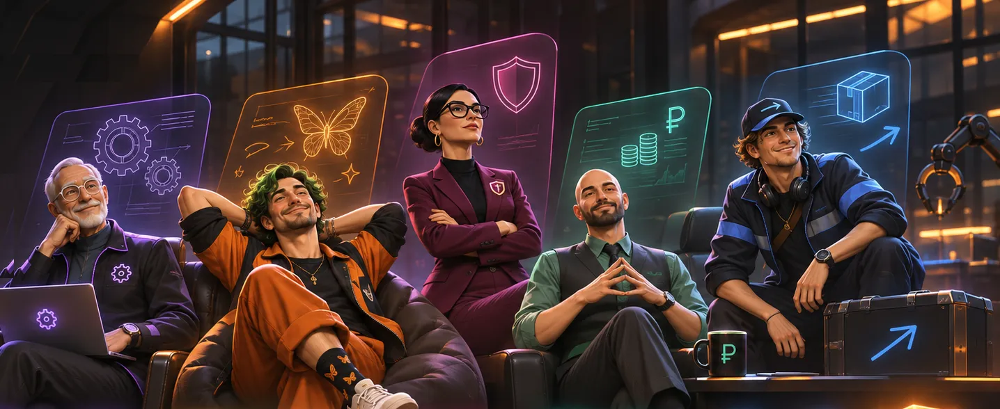
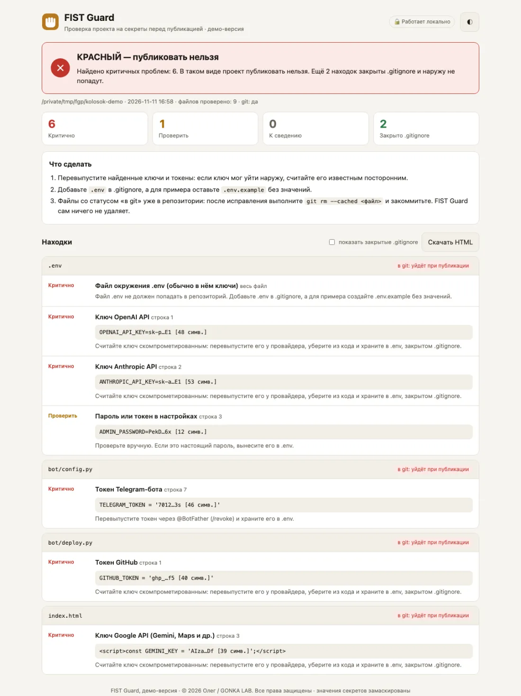

GONKA LAB // DIGITAL FACTORY
RAW IDEA IN.EXCEPTIONAL PRODUCT OUT.
Расскажите идею своими словами — даже если не знаете, как её правильно сформулировать. Пятёрка ИИ-сотрудников FIST поможет понять суть и предложит, как её реализовать. Решения принимает человек.

Главный принцип
Техническое задание писать не нужно
Можно с ошибками и с полуслова. Команда отделит известное от догадок, задаст вопросы и превратит мысль в результат.
- 1Неуклюжая мысль
- 2Понимание
- 3Командная работа
- 4Результат
Это демонстрация: заранее подготовленные примеры, а не живой ИИ. Посетители сайта к рабочим агентам не подключаются.
Пятёрка FIST
Пять пальцев одной руки
ИИ-ассистенты с характером, специализацией и своими границами. Художественные образы — не реальные люди.
Почему FIST
Палец можно сломать. Кулак — сильнее.
Каждый силён в своём. Результат появляется, когда пятеро работают вместе, а ладонь — человек — держит их в одном направлении.
Анатомия цифрового завода
Девять пит-стопов от идеи до финиша
Нажмите на пит-стоп. Трасса гибкая: работа может вернуться назад или идти параллельно.
Окно идей
Есть идея? Расскажи как умеешь
Мы изучим вашу идею и подготовим предварительное предложение. Если оно заинтересует — вместе обсудим детали, стоимость и сроки. Первый разбор бесплатный и ни к чему не обязывает.
Первый публичный релиз: приём идей открыт напрямую через рабочую почту лаборатории — без посредников, сложных анкет и промежуточных серверов.
Расскажите суть задачи своими словами — даже если формулировка кажется неловкой. Технические детали, бюджет и стек знать заранее не нужно: команда разложит всё по полочкам.
Пожалуйста, не присылайте пароли, токены доступа, платёжные данные и другие секреты. Для первого разбора достаточно общего описания замысла.
Действительные результаты
Что уже сделано — и что ещё нет
Планы не выдаём за готовое. Отзывов и клиентов здесь нет — потому что их пока нет.
Продукт лаборатории №1
FIST Guard — проверка проекта на секреты до публикации
Ключ от ИИ-сервиса в коде или токен бота в репозитории могут увидеть чужие люди. FIST Guard находит их до того, как проект уйдёт на GitHub.

- протестировано33 автотеста12.11.2026: 33 из 33 на публичной демо-версии
- замерено0,2–0,3 сНаш замер: 10 запусков на демо-проекте из 9 файлов, MacBook Air 2015. На больших проектах дольше.
- по анализу кодаНе выходит в интернетНет сетевых библиотек; интерфейс открывается только на вашем компьютере (127.0.0.1). Не независимый аудит.
- реализованоЗначения скрытыКлючи в отчёте маскируются:
sk-p…E1 [48 симв.]
Честно: автоматическая проверка снижает риск, но не гарантирует, что секретов нет. Опубликована демонстрационная версия: она не ищет в истории git и не проверяет персональные данные — это есть только в закрытой полной версии, которая не публикуется.
Claude Code + Claude Skill
Помощник объясняет находки простыми словами
Откройте проект в Claude Code и попросите «проверь папку перед публикацией». Claude запустит FIST Guard, объяснит находки и предложит план. Исправления — только с вашего согласия.
Код можно смотреть и запускать для личного ознакомления. Это не open source: изменение, распространение и коммерческое использование — только с письменного разрешения автора.
Принцип устройства
OPEN SHOWROOM. PRIVATE FACTORY.
Витрина — вы здесь
- команда, примеры, готовые продукты
- только проверенные материалы
- связь напрямую через рабочую почту
Производство — закрыто
- работа сотрудников и решения владельца
- закрытые разработки
- с сайтом не связано: идеи читает человек